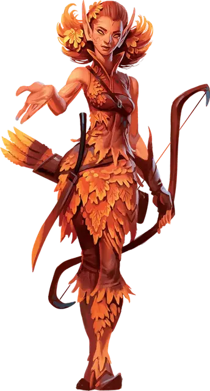

Эладрин
Eladrin

Эладрин — эльфы Страны Фей, царства опасной красоты и безграничной магии. Используя эту магию, эладрин может перемещаться из одного места в другое в мгновение ока, и каждый эладрин связан с эмоциями, запечатленными в Стране Фей в форме времён года — соответствие, которому влияют на настроение и внешний вид эладрина. Время года эладрина может меняться, хотя некоторые сохраняют свою связь с определённым временем года всю свою жизнь. Выберите время года самостоятельно или совершите бросок по таблице «Времена года эладрина». Ваша особенность «Транс» позволяет вам изменять ваше время года.
Времена года Эладрина
| к4 | Время года |
| 1 | Осень: покой и доброжелательность, время, когда собирают летний урожай и делятся им со всеми. |
| 2 | Зима: созерцание и скорбь, когда жизненная энергия мира дремлет. |
| 3 | Весна: радость и торжество, отмеченное весельем из-за ухода зимней горечи. |
| 4 | Лето: храбрость и враждебность, время необузданной энергии. |
Особенности эладрина
Вы обладаете следующими особенностями.
Увеличение характеристик. Либо значение одной характеристики по вашему выбору увеличивается на 2, а другой — на 1, либо значение трёх различных характеристик по вашему выбору увеличивается на 1.
Возраст. Как и другие эльфы, эладрин может прожить более 750 лет.
Скорость. Ваша базовая скорость ходьбы — 30 футов.
Вид существа. Вы — Гуманоид. Вы также считаетесь эльфом для любого необходимого условия или эффекта, который требует, чтобы вы были эльфом.
Размер. Ваш размер — Средний.
Тёмное зрение. На расстоянии 60 футов вы при тусклом освещении можете видеть так, как будто это яркое освещение, и в темноте так, как будто это тусклое освещение. В темноте вы не можете различать цвета, только оттенки серого.
Наследие фей. Вы с преимуществом совершаете спасброски для того чтобы избежать или окончить на себе состояние очарован.
Фейский шаг. Вы можете бонусным действием магическим образом телепортироваться в свободное пространство, которое можете видеть в пределах 30 футов. Вы можете использовать эту особенность количество раз, равное вашему бонусу мастерства. Вы восстанавливаете все потраченные использования по окончании продолжительного отдыха.
При достижении 3-го уровня ваш «Фейский шаг» получает дополнительный эффект в зависимости от вашего времени года; если эффект требует совершения спасброска, то его Сл будет равна 8 + ваш бонус мастерства + ваш модификатор Харизмы:
- Весна. Когда вы используете «Фейский шаг», вы можете коснуться одного согласного существа в пределах 5 футов от вас. После чего это существо перемещается, вместо вас, в свободное пространство по вашему выбору, которое вы можете видеть в пределах 30 футов от себя.
- Лето. Сразу после того, как вы используете «Фейский шаг», каждое существо по вашему выбору, которых вы можете видеть в пределах 5 футов от вас, получает урон огнём, равный вашему бонусу мастерства.
- Осень. Сразу после того, как вы используете «Фейский шаг», до двух существ по вашему выбору, которых вы можете видеть в пределах 10 футов от себя, должны преуспеть в спасброске Мудрости, иначе будут очарованы вами на 1 минуту, либо пока вы или ваши спутники не нанесёте любой урон по ним.
- Зима. Когда вы используете «Фейский шаг», одно существо по вашему выбору, которое вы можете видеть в пределах 5 футов, до того, как вы телепортируетесь, должно преуспеть в спасброске Мудрости, иначе станет испуганно вами до конца вашего следующего хода.
Обострённые чувства. Вы получаете владение навыком Восприятие.
Транс. Вам нет необходимости спать и вас невозможно магически усыпить. Вы можете закончить продолжительный отдых за 4 часа, если проводите это время в медитации, подобной трансу, во время которой вы сохраняете сознание.
Всякий раз, когда вы заканчиваете этот транс, вы можете сменить своё время года, и вы можете получить два владения, которых у вас нет, каждое из которых должно быть оружием или инструментом по вашему выбору, выбранным из «Книги игрока». Вы мистическим образом приобретаете эти владения, извлекая их из общей эльфийской памяти, и сохраняете их до тех пор, пока не закончите свой следующий продолжительный отдых.
Языки. Ваш персонаж может говорить, читать и писать на Общем и еще одном языке, который по вашему мнению подходит для персонажа.